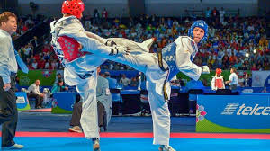
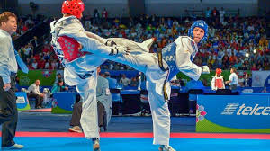
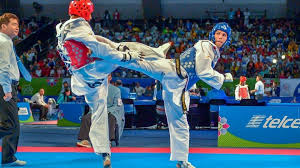

VARIAS PESSOAS ESTÃO PRATICANDO TAEKWONDOHOJE EM DIA
 

Bem as lutas do old taekwondo eram muito diferentes das lutas de atualmente. As lutas do old Taekwondo eram mas agrecivas, os lutadores atacavam mas, e ocorriam muito mais nocaltes nas lutas, mas tambem tinha mais perigo das pessoas se machucarem nas lutas. Antes tinham mas golpes perigosos, e os protetores eram diferentes dos atuais de hoje em dia.
